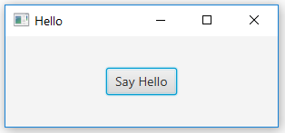
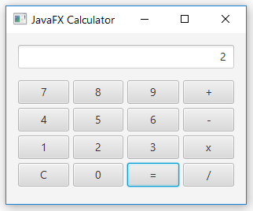
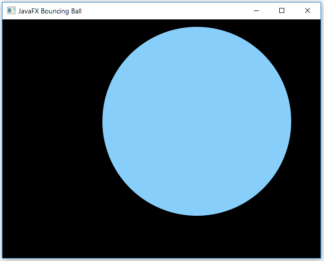
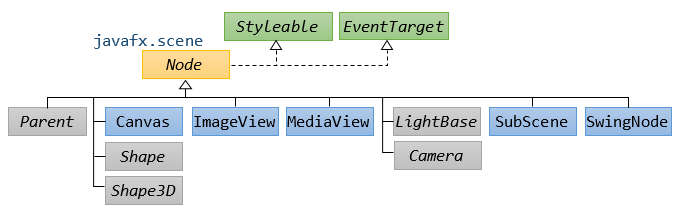
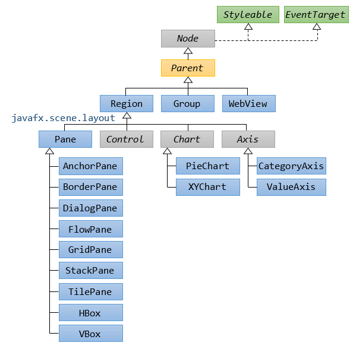
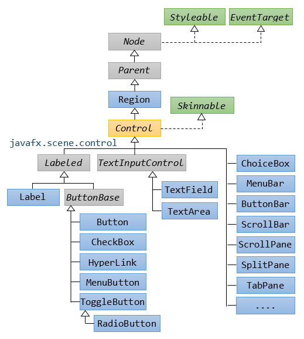
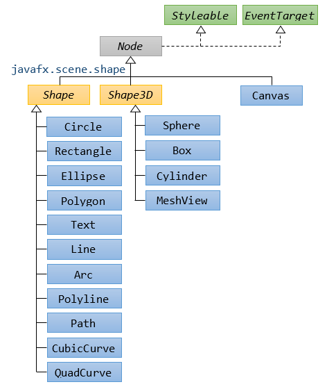
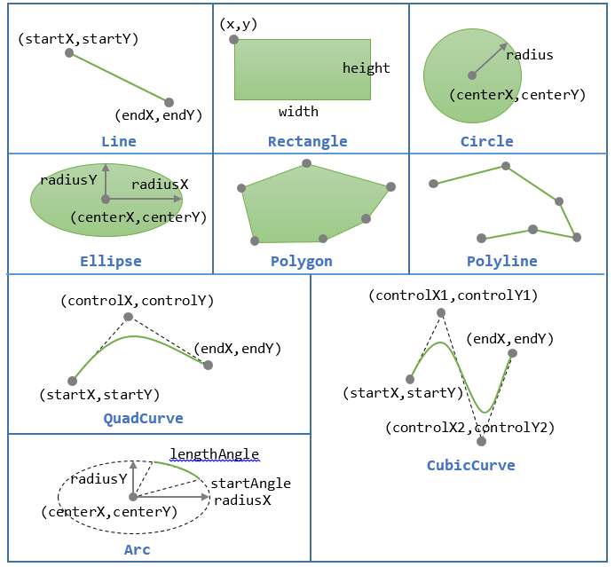
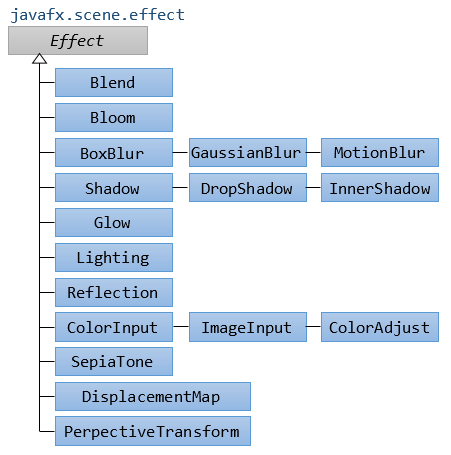
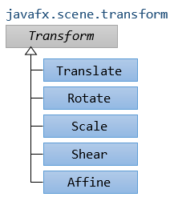

JavaFX is a set of Java graphics libraries for creating Java GUI applications, just like Java AWT and Swing.
JavaFX was originally targeted for Rich Interface Application (RIA, introduced in 2002), i.e., GUI webapp delivered thru a browser's plugin (competing with Adobe Flash, Microsoft Silverlight and Java Applets). However, the trend today is to use HTML5/JavaScript-based, instead of plug-in-based framework. Moreover, browsers (such as Firefox) has stopped supporting plug-ins (such as Java Plug-in for Applets).
History
Sun Microsystems created the Java Programming Language and presented JDK 1.0 in 1995/96. To support GUI programming, Java introduced AWT (Abstract Windowing Toolkit) in JDK 1.1 (1997), and Swing in JDK 1.2 (1998). But many developers felt Swing was over-complex and Java on the desktop never really took off as it did on the server.
Sun Microsystems tried several ways to make it easier to create Java GUI applications. One of these was a scripting language called JavaFX Script 1.0 (2008) which allows developers to build much more complex user Interfaces. But JavaFX Script was not Java. It is a totally new language and never really caught on with Java developers.
When Oracle acquired Sun Microsystems, they killed off JavaFX as a scripting language but added its functionality into the Java Language as JavaFX 2.0 (2011). They enhanced it as the new way to develop user interfaces, intended to replace Swing. Starting from JDK 8 (2014), JavaFX was part of JDK (as JavaFX 8).
Oracle will continue to maintain the Swing library but will not enhance it. Swing and JavaFX can be used together. But for writing new Java applications, JavaFX is recommended as it offers a much simpler way to create desktop applications, and you can write more powerful applications with much less code.
JavaFX Key Features
JavaFX's key features include:
- From JavaFX 2.0, JavaFX is written in Java (no need to learn a new language). Starting from JDK 8, JavaFX is part of JDK.
- Support CSS for skinning.
- Support FXML: a XML-based declarative language to define the structure of the user interface separated from the application code.
- Swing interoperability: You can use Swing UI in JavaFX application.
- WebView: for embedding HTML contents.
- 2D/3D Graphics
- Media: audio (mp3, wav, aiff), video (flv) and image.
- Provide a JavaScript engine.
- ......
In this article, I assume that you have some knowledge in Swing, such as container/component, event-handling, and layout.
JavaFX By Examples
JavaFX is huge, with 36 packages. These are the commonly-used packages:
javafx.application: JavaFX applicationjavafx.stage: top-level containerjavafx.scene: scene and scene graph.javafx.scene.*:control,layout,shape, etc.javafx.event: event handlingjavafx.animation: animation
Example 1: Hello World

1 2 3 4 5 6 7 8 9 10 11 12 13 14 15 16 17 18 19 20 21 22 23 24 25 26 27 28 29 30 31 32 33 |
import javafx.application.Application;
import javafx.event.ActionEvent;
import javafx.event.EventHandler;
import javafx.scene.Scene;
import javafx.scene.control.Button;
import javafx.scene.layout.StackPane;
import javafx.stage.Stage;
public class JavaFXHello extends Application {
private Button btnHello; // Declare a "Button" control
@Override
public void start(Stage primaryStage) {
// Construct the "Button" and attach an "EventHandler"
btnHello = new Button();
btnHello.setText("Say Hello");
// Using JDK 8 Lambda Expression to construct an EventHandler<ActionEvent>
btnHello.setOnAction(evt -> System.out.println("Hello World!"));
// Construct a scene graph of nodes
StackPane root = new StackPane(); // The root of scene graph is a layout node
root.getChildren().add(btnHello); // The root node adds Button as a child
Scene scene = new Scene(root, 300, 100); // Construct a scene given the root of scene graph
primaryStage.setScene(scene); // The stage sets scene
primaryStage.setTitle("Hello"); // Set window's title
primaryStage.show(); // Set visible (show it)
}
public static void main(String[] args) {
launch(args);
}
}
|
How It Works
- A JavaFX GUI Program extends from
javafx.application.Application(just like a Java Swing GUI program extends fromjavax.swing.JFrame). - JavaFX provides a huge set of controls (or components) in package
javafx.scene.control, includingLabel,ButtonandTextField. - We declare and construct a
Buttoncontrol, and attach ajavafx.event.EventHandler<ActionEvent>to theButton, via methodsetOnAction()(ofButtonBasesuperclass), which takes anEventHandler<ActionEvent>, as follows:
public final void setOnAction(EventHandler<ActionEvent> value)
TheEventHandleris a Functional Interface with an abstract methodhandle(), defined as follows:package javafx.event; @FunctionalInterface public interface EventHandler<T extends Event> extends EventListener { void handle(T event); // public abstract }We can trigger thehandle()by firing the button, via clicking the button with the mouse or touch, key press, or invoke thefire()method programmatically.
In this example, we use a one-liner Lambda Expression (JDK 8) to construct an instance of Functional InterfaceEventHandler. You can also use an anonymous inner class (Pre JDK 8), as follows:btnHello.setOnAction(new EventHandler<ActionEvent>() { @Override public void handle(ActionEvent evt) { System.out.println("Hello World!"); } }); - JavaFX uses the metaphor of a theater to model the graphics application. A stage (defined by the
javafx.stage.Stageclass) represents the top-level container (window). The individual controls (or components) are contained in a scene (defined by thejavafx.scene.Sceneclass). An application can have more than one scenes, but only one of the scenes can be displayed on the stage at any given time. The contents of a scene is represented in a hierarchical scene graph of nodes (defined byjavafx.scene.Node).

- To construct the UI:
- Prepare a scene graph.
- Construct a scene, with the root node of the scene graph.
- Setup the stage with the constructed scene.
- In this example, the root node is a "layout" node (container) named
javafx.scene.layout.StackPane, which layouts its children in a back-to-front stack. This layout node has one child node, which is theButton. To add child node(s) under a layout, use:aLayout.getChildren().add(Node node) // Add one node aLayout.getChildren().addAll(Node... nodes) // Add all nodes
Notes: A JavaFX'sPaneis similar to Swing'sJPanel. However, JavaFX has layout-specificPane, such asFlowPane,GridPaneandBorderPane, which is similar to a Swing'sJPanelwithFlowLayout,GridLayoutandBorderLayout. - We allocate a
javafx.scene.Sceneby specifying the root of the scene graph, via constructor:public Scene(Parent root, double width, double height)
wherejavafx.scene.Parentis a subclass ofjavafx.scene.Node, which serves as the base class for all nodes that have children in the scene graph. - We then set the stage's scene, title, and show it.
Example 2: Simple Counter
The following JavaFX GUI counter contains 3 controls (or components): a Label, a TextField and a Button. Clicking the button increases the count displayed in the textfield.
1 2 3 4 5 6 7 8 9 10 11 12 13 14 15 16 17 18 19 20 21 22 23 24 25 26 27 28 29 30 31 32 33 34 35 36 37 38 39 40 41 42 |
import javafx.application.Application;
import javafx.scene.Scene;
import javafx.scene.control.Label;
import javafx.scene.control.Button;
import javafx.scene.control.TextField;
import javafx.scene.layout.FlowPane;
import javafx.stage.Stage;
import javafx.geometry.Insets;
import javafx.geometry.Pos;
public class JavafxCounter extends Application {
private TextField tfCount;
private Button btnCount;
private int count = 0;
@Override
public void start(Stage primaryStage) {
// Allocate controls
tfCount = new TextField("0");
tfCount.setEditable(false);
btnCount = new Button("Count");
// Register event handler using Lambda Expression (JDK 8)
btnCount.setOnAction(evt -> tfCount.setText(++count + ""));
// Create a scene graph of node rooted at a FlowPane
FlowPane flow = new FlowPane();
flow.setPadding(new Insets(15, 12, 15, 12)); // top, right, bottom, left
flow.setVgap(10); // Vertical gap between nodes in pixels
flow.setHgap(10); // Horizontal gap between nodes in pixels
flow.setAlignment(Pos.CENTER); // Alignment
flow.getChildren().addAll(new Label("Count: "), tfCount, btnCount);
// Setup scene and stage
primaryStage.setScene(new Scene(flow, 400, 80));
primaryStage.setTitle("JavaFX Counter");
primaryStage.show();
}
public static void main(String[] args) {
launch(args);
}
}
|
How It Works
- We use 3 controls:
Label,TextFieldandButton(in packagejavafx.scene.control). - We use a layout called
FlowPane, which lays out its children in a flow that wraps at the flowpane's boundary (similar to a Swing'sJPanelinFlowLayout). This layout node is the root of the scene graph, which has the 3 controls as its children.
Example 3: Calculator

1 2 3 4 5 6 7 8 9 10 11 12 13 14 15 16 17 18 19 20 21 22 23 24 25 26 27 28 29 30 31 32 33 34 35 36 37 38 39 40 41 42 43 44 45 46 47 48 49 50 51 52 53 54 55 56 57 58 59 60 61 62 63 64 65 66 67 68 69 70 71 72 73 74 75 76 77 78 79 80 81 82 83 84 85 86 87 88 89 90 91 92 93 94 95 96 97 98 99 100 101 102 103 104 105 106 107 108 109 110 111 112 113 114 115 116 117 118 119 120 121 122 123 124 125 126 127 128 129 130 131 132 133 134 135 136 137 138 139 140 141 142 143 144 145 146 147 148 149 150 151 152 153 |
import javafx.application.Application;
import javafx.event.ActionEvent;
import javafx.event.EventHandler;
import javafx.scene.Scene;
import javafx.scene.control.Label;
import javafx.scene.control.Button;
import javafx.scene.control.TextField;
import javafx.scene.layout.BorderPane;
import javafx.scene.layout.GridPane;
import javafx.scene.layout.ColumnConstraints;
import javafx.scene.layout.Priority;
import javafx.stage.Stage;
import javafx.geometry.Insets;
import javafx.geometry.Pos;
public class JavaFXCalculator extends Application {
private TextField tfDisplay; // display textfield
private Button[] btns; // 16 buttons
private String[] btnLabels = { // Labels of 16 buttons
"7", "8", "9", "+",
"4", "5", "6", "-",
"1", "2", "3", "x",
"C", "0", "=", "/"
};
// For computation
private int result = 0; // Result of computation
private String inStr = "0"; // Input number as String
// Previous operator: ' '(nothing), '+', '-', '*', '/', '='
private char lastOperator = ' ';
// Event handler for all the 16 Buttons
EventHandler
|
How It Works
- [TODO]
- The root of the scene graph is a
BorderPane, which lays out nodes in 5 zones: top, bottom, left, right, center (similar to a Swing'sJPanelinBorderLayout). The top zone contains a displayTextField. The center zone contains aGridPane(similar to a Swing'sJPanelinGridLayout) of 4x4Buttons. - In the
GridPane, we arrange theButtonto fill the full width by setting column constraints andButton's max-size:for (int i = 0; i < numCols; ++i) { columns[i] = new ColumnConstraints(); columns[i].setHgrow(Priority.ALWAYS) ; // Allow column to grow columns[i].setFillWidth(true); // Ask nodes to fill space for column ...... } ...... btns[i].setMaxSize(Double.MAX_VALUE, Double.MAX_VALUE); // full-widthAlternatively, you can use an intermediateHBoxLayout to arrange theButtons; or use CSS styles. - [TODO]
Example 4: Using NetBeans GUI Builder and Deployment
To write a JavaFX application:
- Launch NetBeans ⇒ New Project ⇒ "New Project" dialog appears ⇒ In Categories: Select "JavaFX" ⇒ In Projects: Select "JavaFX Application" ⇒ Next.
- In "New JavaFX Application" dialog ⇒ Set the "Project Name" and "Project Location" ⇒ Finish.
- A hello-world program is created by default. You can right-click on the file ⇒ Run File.
[TODO]
Example 4: Using Eclipse GUI Builder
You need to install a plugin called e(fx)clipse.
Launch Eclipse ⇒ Help ⇒ Install New Software ⇒ In "Work With", enter "http://download.eclipse.org/efxclipse/updates-released/2.4.0/site" (Check the e(fx)clipse mother site @ https://www.eclipse.org/efxclipse/install.html for the latest link).
To write a JavaFX application:
- Launch Eclipse ⇒ File ⇒ New ⇒ Project ⇒ JavaFX ⇒ JavaFX Project ⇒ Next.
- "New Java Project" dialog appears ⇒ Enter the "Project Name" ⇒ Finish.
- A source file "
Main.java" is created under package "application". You can run the app by right-click on the file ⇒ Run As ⇒ Java Application.
[TODO]
Example: Using CSS for Styling UI Elements
[TODO] A counter with a title line, a label, a textfield, and 3 buttons: count up, count down, and reset, styled with CSS.
Example: Using FXML to Build the UI
[TODO] A counter with a title line, a label, a textfield, and 3 buttons: count up, count down, and reset, styled with CSS, and built with FXML.
Example: Bouncing Ball

1 2 3 4 5 6 7 8 9 10 11 12 13 14 15 16 17 18 19 20 21 22 23 24 25 26 27 28 29 30 31 32 33 34 35 36 37 38 39 40 41 42 43 44 45 46 47 48 49 50 51 52 53 54 55 56 57 58 59 60 61 62 63 64 65 |
import javafx.animation.KeyFrame;
import javafx.animation.Timeline;
import javafx.application.Application;
import javafx.geometry.Insets;
import javafx.scene.layout.Background;
import javafx.scene.layout.BackgroundFill;
import javafx.scene.layout.CornerRadii;
import javafx.scene.Scene;
import javafx.scene.layout.Pane;
import javafx.scene.paint.Color;
import javafx.scene.shape.Circle;
import javafx.stage.Stage;
import javafx.util.Duration;
public class JavaFXBouncingBall extends Application {
// Constants
private static final int CANVAS_WIDTH = 640;
private static final int CANVAS_HEIGHT = 480;
private static final int UPDATE_PERIOD = 50; // milliseconds
// Bouncing ball (via Circle Shape)
private Circle ball;
private int centerX = 280, centerY = 220; // Center (x, y)
private int radius = 190;
private int xStep = 3, yStep = 5; // displacement per step in x, y
@Override
public void start(final Stage primaryStage) {
// Setup scene and stage
Pane canvas = new Pane();
canvas.setPrefSize(CANVAS_WIDTH, CANVAS_HEIGHT);
canvas.setBackground(new Background(
new BackgroundFill(Color.BLACK, CornerRadii.EMPTY, Insets.EMPTY)));
primaryStage.setScene(new Scene(canvas));
primaryStage.setTitle("JavaFX Bouncing Ball");
primaryStage.show();
// Setup ball
ball = new Circle(centerX, centerY, radius, Color.LIGHTSKYBLUE);
canvas.getChildren().addAll(ball);
// Setup a Timeline for Animation
Timeline loop = new Timeline(new KeyFrame(Duration.millis(UPDATE_PERIOD), evt -> {
// Update the (x, y)
centerX += xStep;
centerY += yStep;
if (centerX + radius > CANVAS_WIDTH || centerX - radius < 0) {
xStep = -xStep;
}
if (centerY + radius > CANVAS_HEIGHT || centerY - radius < 0) {
yStep = -yStep;
}
ball.setCenterX(centerX);
ball.setCenterY(centerY);
}));
// Repeat the KeyFrame indefinitely
loop.setCycleCount(Timeline.INDEFINITE);
loop.play();
}
public static void main(final String[] args) {
launch(args);
}
}
|
How It Works
- We use a
Pane(similar to a Swing'sJPanel) as our drawing canvas, which is the root of the scene graph. We set the width and height of thePane, which is also served as the containing box. - We draw the ball using a
Circle(injavafx.scene.shape) by setting its center(x,y), radius and color (using constants defined injavafx.scene.paint.Color); and add it to thePane. - We use a
Timeline(injavafx.animation) to set up our animation. ATimelineis defined by one or moreKeyFrames (injavafx.animation), constructed as follows:public Timeline(KeyFrame... keyFrames) public Timeline(double targetFramerate, KeyFrame... keyFrames)
- A KeyFrame has the following constructors:
public KeyFrame(Duration time, EventHandler<ActionEvent> onFinished, KeyValue... values)
- The
Duration(injavafx.util) can be constructed via:Duration(double millis) // in milliseconds - The
EventHandlerwill be invoked at the end of theDuration. - A set of
KeyValues (injavafx.animation) are interpolated such that they will reach their target value at the specified time.
DurationtoUPDATE_PERIOD. We fire theEventHandler(written using JDK 8 Lambda Expression) to update the center(x,y)of theCircle, and set the center. NoKeyValueis used. - The
- We set the
Timeline's cycle count toINDEFINITEto repeat theKeyFrames indefinitely; andplay()theTimeline.
[TODO]
JavaFX Basics
JavaFX Program Template
1 2 3 4 5 6 7 8 9 10 11 12 13 14 15 16 17 18 19 20 21 22 23 24 25 26 27 28 29 30 31 32 33 |
import javafx.application.Application;
import javafx.scene.Scene;
import javafx.stage.Stage;
......
public class JavaFXTemplate extends Application {
// Private variables
......
@Override
public void start(Stage primaryStage) {
......
// Construct a scene graph of nodes
Xxx root = ...... // Construct the root of the scene graph
root.getChildren().add(......); // Root node add child node
root.getChildren().addAll(..., ...); // Root node add child nodes
// Construct a scene with the root of the scene graph, width and height
Scene scene = new Scene(root, 300, 100);
// Set the scene of the stage
primaryStage.setScene(scene);
// Set the window title
primaryStage.setTitle("Hello");
// Show the stage
primaryStage.show();
}
public static void main(String[] args) {
// Launch the application by invoking start()
launch(args);
}
}
|
[TODO]
JavaFX Application Structure
A JavaFX application (javafx.application.Application) comprises:
- Stage (
javafx.stage.Stage) - Scene (
javafx.scene.Scene) - A hierarchical scene graph of nodes (
javafx.scene.Node)
Application and Its Life Cycle
A JavaFX application extends from javafx.application.Application. The JavaFX runtime maintains an Application's life cycle as follows:
- It constructs an instance of
Application. - It calls the
Application'sinit()method. - It calls the
Application'sstart(javafx.stage.Stage)method, and passes the primary stage as its argument. - It waits for the
Applicationto complete (e.g., viaPlatform.exit(), or closing all the windows). - It calls the
Application'sstop()method.
[TODO] life cycle diagram
The start() is an abstract method, that must be overridden. The init() and stop() has default implementation that does nothing.
If you use System.exit(int) to terminate the application, stop() will not be called.
Stage
JavaFX uses the metaphor of a theater to model the graphics application. A stage (defined by the javafx.stage.Stage class) represents the top-level container, typically a window. The UI elements such as controls (or components) are contained in a scene (defined by the javafx.scene.Scene class). An application can have more than one scenes, but only one of the scenes can be displayed on the stage at any given time.
A stage is divided into decoration (title bar and border) and the content area. A stage can have one of these styles:
StageStyle.DECORATED: solid white background with decorationsStageStyle.UNDECORATED: solid white background with no decorationsStageStyle.TRANSPARENT: transparent background with no decorationsStageStyle.UTILITY: solid white background with minimal decorations
A primary stage is created by the JavaFX runtime, and passed into the Application as an argument in the Application's start() method.
Scene and Scene Graph
The contents of a scene is represented in a hierarchical (tree-like) scene graph of nodes. To construct a Scene, we need to pass the root of the scene graph and optional width and height, as in the following constructors:
Scene(Parent root, double width, double height) Scene(Parent root, double width, double height, Paint fill) Scene(Parent root, double width, double height, boolean depthBuffer, SceneAntialiasing antiAliasing)
Nodes
A node is defined by an abstract class javafx.scene.Node, which is the superclass of all the UI elements:
- Controls (Components): subclasses of
Parentin packagejavafx.scene.control, e.g.,Label,TextField,Button. - Layout Pane (Containers): subclasses of
Parentin packagejavafx.scene.layout, e.g.,StackPane,FlowPane,GridPane,BorderPane. - Geometrical Shapes: subclasses of
ShapeandShape3Din packagejavafx.scene.shape, e.g.,Circle,Rectangle,Polygon,sphere,Box. - Media Elements: e.g.,
ImageView,MediaView(playable by media player) in packagesjavafx.scene.imageandjavafx.scene.media. - more...
The Node implements:
javafx.css.Styleable: for applying CSS style.javafx.event.EventTarget: as an event target..
There are 3 types of nodes:
- Root Node: no parent. Root of the tree.
- Branch Node (
Parent): having child nodes. Defined by the abstract classjavafx.scene.Parentwith 3 concrete subclasses (see class diagram):Group: Any transform (e.g. rotation), effect, or state applied to a Group will be applied to all children of that group.Region:Regionis the base class for all UI Controls and layout containers.Regionhas 4 subclasses:Control(UI controls),Pane(Container),Chart(PieChart,XYChart) andAxis.WebView: for HTML content.
- Leaf Node
Parents
Controls
Shape and Shape3D
 The constructors are:
Line(double startX, double startY, double endX, double endY)
Rectangle(double x, double y, double width, double height)
Circle(double centerX, double centerY, double radius)
Ellipse(double centerX, double centerY, double radiusX, double radiusY)
Polygon(double[] xyPairs)
Polyline(double[] xyPairs)
QuadCurve(double startX, double startY, double controlX, double controlY,
double endX, double endY)
CubicCurve(double startX, double startY, double controlX1, double controlY1,
double controlX2, double controlY2, double endX, double endY)
Arc(double centerX, double centerY, double radiusX, double radiusY,
double startAngleDegree, double lengthAngleDegree)
Path and PathElements

Example [TODO]
Path path = new Path(); MoveTo moveTo = new MoveTo(0.0, 0.0); // Starting Point HLineTo hLineTo = new HLineTo(80.0); QuadCurveTo quadCurveTo = new QuadCurveTo(); quadCurveTo.setControlX(100.0); quadCurveTo.setControlY(0.0); quadCurveTo.setX(120.0); quadCurveTo.setY(60.0); // or // QuadCurveTo quadCurveTo = new QuadCurveTo(100.0, 0.0, 120.0, 60.0) ArcTo arcTo = new ArcTo(); arcTo.setX(50.0f); arcTo.setY(50.0f); arcTo.setRadiusX(50.0f); arcTo.setRadiusY(50.0f); path.getElements().add(moveTo); path.getElements().add(new LineTo(200.0, 50.0)); path.getElements().addAll(quadCurveTo, hLineTo, arcTo); path.getElements().add(new ClosePath()); // Close the Path
Text (javafx.scene.text)
[TODO]
Effect (javafx.scene.effect)
[TODO]
Transform (javafx.scene.transform)
[TODO]
Controls and Layout Panes
[TODO]
Event Handling
[TODO]
Colors and Fonts
[TODO]
Images and Media
[TODO]
3D Shapes
[TODO]
Chart
[TODO]
REFERENCES & RESOURCES
- "Getting Started with JavaFX" @ http://docs.oracle.com/javafx/2/get_started/jfxpub-get_started.htm.